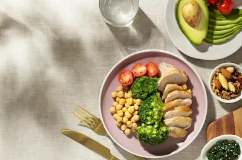

Dieta para Controlar el Azúcar en Sangre
Fundamentos de una dieta glucémica saludable
Una dieta para controlar el azúcar en sangre se basa en el concepto de carga glucémica, que considera no solo qué tan rápido un alimento eleva el azúcar en sangre, sino también cuántos carbohidratos contiene por porción. Los alimentos con baja carga glucémica como vegetales de hoja verde, frutos secos y legumbres liberan glucosa gradualmente, evitando los picos de insulina que contribuyen a la resistencia. Estos alimentos suelen ser ricos en fibra soluble, que forma un gel en el intestino y retrasa la absorción de carbohidratos, además de alimentar las bacterias intestinales beneficiosas que juegan un papel en el metabolismo de la glucosa.
La proteína de alta calidad es otro componente esencial, ya que estimula la liberación de hormonas que promueven la saciedad y ralentizan el vaciado gástrico. Fuentes como huevos, pescado, pollo y proteínas vegetales (tofu, tempeh) deben incluirse en cada comida principal. Las grasas saludables, particularmente las monoinsaturadas del aceite de oliva y las omega-3 del pescado graso, mejoran la sensibilidad a la insulina y reducen la inflamación subyacente asociada con la resistencia a la insulina.
Superalimentos y especias reguladoras de glucosa
Ciertos alimentos tienen propiedades excepcionales para regular el azúcar en sangre. La canela, por ejemplo, contiene compuestos que imitan la acción de la insulina y pueden reducir los niveles de glucosa en ayunas. El vinagre de manzana tomado antes de las comidas (1-2 cucharadas diluidas en agua) reduce la respuesta glucémica de la comida hasta en un 20%. Otros superalimentos incluyen las semillas de chía (ricas en fibra y que forman un gel que retrasa la absorción de carbohidratos), el té verde (que mejora la sensibilidad a la insulina) y las hojas de moringa (con compuestos que ayudan a regular la liberación de glucosa).
Las especias como la cúrcuma (con su compuesto activo curcumina), el jengibre y el fenogreco han demostrado en estudios mejorar los marcadores de control glucémico. Incorporar estos ingredientes a la dieta diaria no solo añade sabor sin calorías adicionales, sino que proporciona beneficios metabólicos significativos. Por ejemplo, añadir media cucharadita de canela al café matutino o usar vinagre de manzana en aderezos para ensaladas son formas sencillas de aprovechar estos efectos.
Combinaciones de alimentos y secuencia de ingesta
La forma en que combinamos los alimentos puede potenciar o mitigar su impacto en el azúcar en sangre. Una estrategia efectiva es el "plato del equilibrio glucémico": la mitad del plato con vegetales no almidonados, un cuarto con proteína magra y el otro cuarto con carbohidratos complejos ricos en fibra. Añadir una porción de grasa saludable (como aguacate o aceite de oliva) completa esta combinación ideal. Por ejemplo, en lugar de comer solo un plato de pasta (que puede causar un pico de azúcar), combinarla con salmón, brócoli y una ensalada con aderezo de oliva reduce significativamente la respuesta glucémica.
La secuencia de ingesta también importa: comenzar las comidas con vegetales y proteínas antes de consumir los carbohidratos puede reducir los picos de glucosa postprandial hasta en un 40%. Este enfoque, conocido como "carga de nutrientes", aprovecha el efecto de las fibras y proteínas para retardar el vaciado gástrico y la absorción de glucosa. Beber agua con vinagre de manzana o comer una ensalada como primer plato son formas prácticas de aplicar este principio.
Planificación de comidas y errores comunes
Planificar con anticipación es clave para mantener una dieta que controle el azúcar en sangre. Preparar lotes de vegetales lavados y cortados, cocinar proteínas para varios días y tener opciones saludables a mano evita caer en elecciones impulsivas. Un error común es eliminar todos los carbohidratos en lugar de elegir los adecuados (como cambiar arroz blanco por quinoa o camote). Otro error es no incluir suficiente grasa saludable, lo que puede llevar a antojos y comer en exceso más tarde.
La hidratación adecuada es otro factor frecuentemente pasado por alto: la deshidratación leve puede elevar los niveles de glucosa en sangre. Beber suficiente agua (unos 2 litros diarios, ajustado por actividad física) ayuda a los riñones a eliminar el exceso de glucosa. Finalmente, es importante recordar que la consistencia a largo plazo es más importante que la perfección ocasional - permitirse una comida "libre" ocasional no arruinará el progreso si se mantiene la rutina saludable la mayor parte del tiempo.